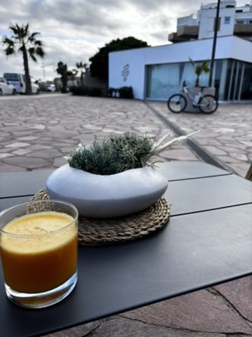
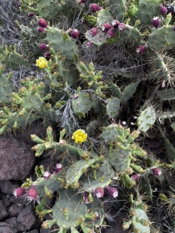
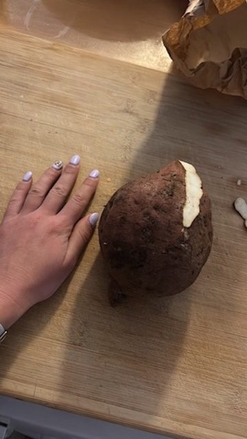
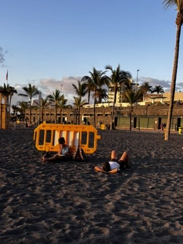
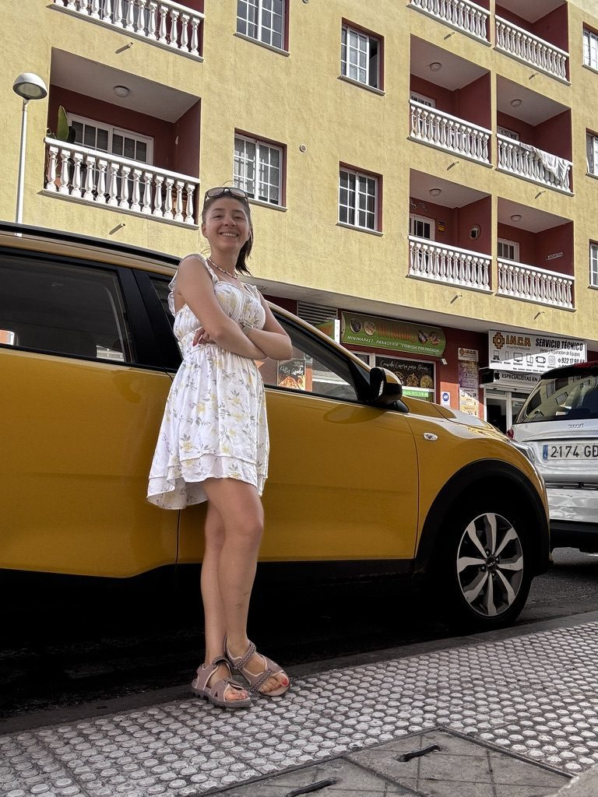

There is an art to arriving somewhere slowly. Most people land, check in, immediately consult a list of things to do, and start executing. I used to do this. I've mostly stopped. The first day in a new place is for looking around, not for ticking boxes. Tenerife told me this directly.

Tenerife's welcome: no rush. Look around yourself. The island is not going anywhere.
The island said it plainly. No rush. Look around yourself. This is the kind of instruction that sounds obvious until you remember how many places you've been where you spent the first two days moving too fast and the last day wishing you'd slowed down. I took it seriously. I put the list away.
The cactus

Lovely cactus. I have nothing to add. It was lovely. That's it.
Tenerife has cacti that deserve individual acknowledgement. Not the sad potted ones you find in offices — proper, dramatic, sculptural cacti that have been growing in volcanic soil for decades and look like they were designed by someone with strong opinions. This one stopped me. I photographed it. I moved on. Some things are just good and don't require more analysis than that.
Overwhelmed by nature

Happy. Overwhelmed. By the majesty of nature. Sometimes there is no other appropriate response.
There are landscapes that require you to stop performing for a moment and just be inside them. Tenerife has several. The Teide caldera from a distance. The Masca gorge. The north coast cliffs at a certain angle of late afternoon light. I stood in front of one of these and felt the specific thing that large, indifferent nature reliably produces — a useful sense of your own scale in the world. Small, in the best possible way. Present. Genuinely nowhere else.
The potato

Nomad life, cooking mode. That potato was enormous and it was exactly what I needed.
One of the quieter pleasures of nomad life — the ones nobody puts in the Instagram caption — is the evening when you have a kitchen, you're not going out, and you cook something simple and large and eat it in peace. The Canary Islands grow exceptional potatoes. Papas arrugadas — the local wrinkled potatoes boiled in salt until the skins crinkle — are one of those regional foods that make you wonder why anyone eats anything else. I cooked a significant quantity of them. I regret nothing.
Kids living their best life

Kids at the beach. Living their best life. Unbothered, unscheduled, entirely present.
I watched a group of kids at the beach for a while. Not in a weird way — just the kind of watching you do when you're sitting nearby and they're impossible to ignore because they are having, without any qualification, the best time. Completely absorbed in the water and the sand. No phones. No schedule. No awareness that anyone was watching. Zero performance.
Children at the beach are a useful reminder of what it looks like to be fully somewhere. You spend years trying to get back to that state through meditation and mindfulness apps and they're just doing it automatically in the shallows with a bucket.
Returning the car

It's a wrap. Keys returned. Next adventure loading.
Returning a rental car is a small ritual that marks the end of something. You drove roads you'd never driven. You took wrong turns that became the right turns. You parked in places that required reversing seven times. You listened to the same playlist until you knew every word. And then you hand the keys back, they check the car for scratches, and that chapter of the trip is done.
Tenerife was a long chapter. Several stories long, as it turned out. The kind of place that generates more material the longer you stay in it — more people, more roads, more mornings where you didn't know what was going to happen and something did anyway.
Keys handed back. Moving on. The next adventure had already begun, in the way the next one always does: quietly, before you've properly finished the current one.